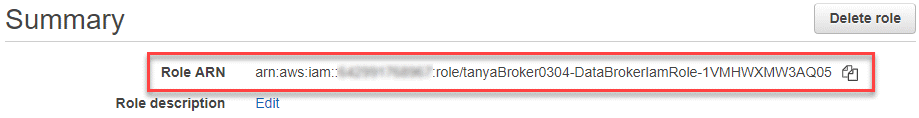

릴리스 정보
릴리스 정보
소스와 타겟을 준비합니다
 변경 제안
변경 제안
소스와 타겟이 다음 요구 사항을 충족하는지 확인합니다.
네트워킹
-
소스와 타겟이 데이터 브로커 그룹에 네트워크로 연결되어 있어야 합니다.
예를 들어, NFS 서버가 데이터 센터에 있고 데이터 브로커가 AWS에 있는 경우 네트워크에서 VPC로 네트워크 연결(VPN 또는 Direct Connect)이 필요합니다.
-
소스, 타겟 및 데이터 브로커가 NTP(Network Time Protocol) 서비스를 사용하도록 구성하는 것이 좋습니다. 세 구성 요소 간의 시간 차이는 5분을 초과해서는 안 됩니다.
대상 디렉토리
동기화 관계를 생성할 때 BlueXP 복사 및 동기화를 통해 기존 타겟 디렉토리를 선택한 다음 원하는 경우 해당 디렉토리 내에 새 폴더를 생성할 수 있습니다. 따라서 선호하는 타겟 디렉토리가 이미 있는지 확인하십시오.
디렉토리를 읽을 수 있는 권한
소스 또는 타겟의 모든 디렉토리 또는 폴더를 표시하려면 BlueXP 복사 및 동기화에 디렉토리 또는 폴더에 대한 읽기 권한이 필요합니다.
- NFS 를 참조하십시오
-
파일 및 디렉토리에 uid/gid가 있는 소스/대상에서 사용 권한을 정의해야 합니다.
- 오브젝트 스토리지
-
-
AWS 및 Google Cloud의 경우 데이터 브로커에 목록 개체 권한이 있어야 합니다. 이러한 권한은 데이터 브로커 설치 단계를 수행하는 경우 기본적으로 제공됩니다.
-
Azure, StorageGRID 및 IBM의 경우 동기화 관계를 설정할 때 입력하는 자격 증명에는 목록 개체 권한이 있어야 합니다.
-
- 중소기업
-
동기화 관계를 설정할 때 입력하는 SMB 자격 증명에는 목록 폴더 권한이 있어야 합니다.

|
데이터 브로커에서는 기본적으로 .snapshot,~snapshot,.copy-offload 디렉토리를 무시합니다 |
Amazon S3 버킷 요구사항
Amazon S3 버킷이 다음 요구사항을 충족하는지 확인하십시오.
Amazon S3에 대해 지원되는 데이터 브로커 위치
S3 스토리지를 포함하는 동기화 관계는 AWS 또는 사내에 데이터 브로커가 배포되어야 합니다. 두 경우 모두 설치 중에 BlueXP 복사 및 동기화에서 데이터 브로커를 AWS 계정에 연결하라는 메시지가 표시됩니다.
지원되는 AWS 영역
중국 지역을 제외한 모든 지역이 지원됩니다.
다른 AWS 계정의 S3 버킷에 필요한 권한
동기화 관계를 설정할 때 데이터 브로커와 연결되지 않은 AWS 계정에 상주하는 S3 버킷을 지정할 수 있습니다.
"이 JSON 파일에 포함된 권한" 데이터 브로커가 액세스할 수 있도록 이 S3 버킷에 적용해야 합니다. 이러한 사용 권한을 통해 데이터 브로커가 데이터를 버킷과 복사하거나 버킷의 오브젝트를 나열할 수 있습니다.
JSON 파일에 포함된 권한에 대해서는 다음을 참조하십시오.
-
_<BucketName>_은(는) 데이터 브로커와 연결되지 않은 AWS 계정에 상주하는 버킷의 이름입니다.
-
_<RoleARN>_은(는) 다음 중 하나로 교체해야 합니다.
-
데이터 브로커가 Linux 호스트에 수동으로 설치된 경우, _RoleARN_은 데이터 브로커를 배포할 때 AWS 자격 증명을 제공한 AWS 사용자의 ARN 이어야 합니다.
-
CloudFormation 템플릿을 사용하여 AWS에 데이터 브로커가 배포된 경우, _RoleARN_은 템플릿에 의해 생성된 IAM 역할의 ARN 이어야 합니다.
EC2 콘솔로 이동하여 데이터 브로커 인스턴스를 선택한 다음 설명 탭에서 IAM 역할을 선택하여 역할 ARN을 찾을 수 있습니다. 그런 다음 IAM 콘솔에서 역할 ARN이 포함된 요약 페이지를 볼 수 있습니다.

-
Azure Blob 저장소 요구 사항
Azure Blob 저장소가 다음 요구사항을 충족하는지 확인합니다.
Azure Blob에 지원되는 데이터 브로커 위치
동기화 관계에 Azure Blob 스토리지가 포함된 경우 데이터 브로커가 모든 위치에 상주할 수 있습니다.
지원되는 Azure 지역
중국, 미국 정부 및 미국 국방부 지역을 제외한 모든 지역이 지원됩니다.
Azure Blob 및 NFS/SMB를 포함하는 관계의 연결 문자열
Azure Blob 컨테이너와 NFS 또는 SMB 서버 간에 동기화 관계를 생성할 때 BlueXP 복사본을 제공하고 스토리지 계정 연결 문자열과 동기화해야 합니다.

두 Azure Blob 컨테이너 간에 데이터를 동기화하려면 연결 문자열에 가 포함되어야 합니다 "공유 액세스 서명입니다" (SAS) Blob 컨테이너와 NFS 또는 SMB 서버 간에 동기화할 때 SAS를 사용할 수도 있습니다.
SAS는 Blob 서비스 및 모든 리소스 유형(서비스, 컨테이너 및 개체)에 대한 액세스를 허용해야 합니다. 또한 SAS에는 다음과 같은 사용 권한이 포함되어야 합니다.
-
소스 Blob 컨테이너의 경우 Read 및 List 입니다
-
대상 Blob 컨테이너의 경우 읽기, 쓰기, 목록, 추가 및 만들기 가 있습니다

|
|
Azure Blob 컨테이너가 포함된 연속 동기화 관계를 구현하려는 경우 일반 연결 문자열 또는 SAS 연결 문자열을 사용할 수 있습니다. SAS 연결 문자열을 사용하는 경우 가까운 장래에 만료되도록 설정하지 않아야 합니다. |
Azure Data Lake Storage Gen2
Azure Data Lake를 포함하는 동기화 관계를 생성할 때 BlueXP 복사본을 제공하고 스토리지 계정 연결 문자열과 동기화해야 합니다. SAS(공유 액세스 서명)가 아니라 일반 연결 문자열이어야 합니다.
Azure NetApp Files 요구 사항
Azure NetApp Files와 데이터를 동기화하거나에서 데이터를 동기화할 때 프리미엄 또는 울트라 서비스 수준을 사용합니다. 디스크 서비스 수준이 Standard인 경우 장애 및 성능 문제가 발생할 수 있습니다.

|
적합한 서비스 수준을 결정하는 데 도움이 필요한 경우 솔루션 설계자와 상의하십시오. 볼륨 크기와 볼륨 계층에 따라 처리량을 결정합니다. |
박스 요건
-
Box를 포함하는 동기화 관계를 생성하려면 다음 자격 증명을 제공해야 합니다.
-
클라이언트 ID입니다
-
클라이언트 암호
-
개인 키
-
공개 키 ID입니다
-
암호 구문
-
엔터프라이즈 ID입니다
-
-
Amazon S3에서 Box로 동기화 관계를 생성하는 경우 다음 설정이 1로 설정된 통합 구성이 있는 데이터 브로커 그룹을 사용해야 합니다.
-
스캐너 동시 사용
-
스캐너 프로세스 제한
-
운송 업체 위탁 통화
-
수송 프로세스 제한
-
Google Cloud Storage 버킷 요구사항
Google Cloud Storage 버킷이 다음 요구사항을 충족하는지 확인하십시오.
Google Cloud Storage에 대한 지원 데이터 브로커 위치
Google Cloud Storage를 포함한 동기화 관계에는 Google Cloud 또는 사내에 구축된 데이터 브로커가 필요합니다. BlueXP 복사 및 동기화는 동기화 관계를 생성할 때 데이터 브로커 설치 프로세스를 안내합니다.
지원되는 Google Cloud 지역
모든 지역이 지원됩니다.
다른 Google Cloud 프로젝트의 버킷에 대한 권한
동기화 관계를 설정할 때 데이터 브로커의 서비스 계정에 필요한 권한을 제공하는 경우 다양한 프로젝트의 Google Cloud 버킷 중에서 선택할 수 있습니다. "서비스 계정 설정 방법에 대해 알아보십시오".
SnapMirror 대상에 대한 권한입니다
동기화 관계의 소스가 SnapMirror 대상(읽기 전용)인 경우 "읽기/목록" 사용 권한으로 소스의 데이터를 타겟으로 동기화할 수 있습니다.
Google Cloud 버킷 암호화
고객이 관리하는 KMS 키 또는 기본 Google 관리형 키를 사용하여 타겟 Google Cloud 버킷을 암호화할 수 있습니다. 버킷에 이미 KMS 암호화가 추가된 경우 기본 Google 관리 암호화가 무시됩니다.
고객 관리형 KMS 키를 추가하려면 와 함께 데이터 브로커를 사용해야 합니다 "권한을 수정합니다", 및 키는 버킷과 같은 지역에 있어야 합니다.
Google 드라이브
Google Drive가 포함된 동기화 관계를 설정할 때 다음을 제공해야 합니다.
-
데이터를 동기화할 Google Drive 위치에 액세스할 수 있는 사용자의 이메일 주소입니다
-
Google Drive 액세스 권한이 있는 Google Cloud 서비스 계정의 이메일 주소입니다
-
서비스 계정의 개인 키입니다
서비스 계정을 설정하려면 Google 설명서의 지침을 따르십시오.
OAuth 범위 필드를 편집할 때 다음 범위를 입력합니다.
-
https://www.googleapis.com/auth/drive 으로 문의하십시오
NFS 서버 요구 사항
-
NFS 서버는 NetApp 시스템이거나 NetApp이 아닌 시스템이 될 수 있습니다.
-
파일 서버는 데이터 브로커 호스트가 필요한 포트를 통해 내보내기에 액세스할 수 있도록 허용해야 합니다.
-
111 TCP/UDP
-
2049 TCP/UDP
-
5555 TCP/UDP
-
-
NFS 버전 3, 4.0, 4.1 및 4.2가 지원됩니다.
서버에서 원하는 버전을 활성화해야 합니다.
-
ONTAP 시스템에서 NFS 데이터를 동기화하려면 SVM을 위한 NFS 내보내기 목록에 대한 액세스가 활성화되어 있는지 확인하십시오(vserver NFS modify -vserver_svm_name_-showmount 설정).
showmount의 기본 설정은 ONTAP 9.2부터 _enabled_입니다.
ONTAP 요구 사항
동기화 관계에 Cloud Volumes ONTAP 또는 온프레미스 ONTAP 클러스터가 포함되어 있고 NFSv4 이상을 선택한 경우 ONTAP 시스템에서 NFSv4 ACL을 설정해야 합니다. ACL을 복제하려면 이 작업이 필요합니다.
ONTAP S3 스토리지 요구 사항
을 포함하는 동기화 관계를 설정할 때 "ONTAP S3 스토리지"다음을 제공해야 합니다.
-
ONTAP S3에 연결된 LIF의 IP 주소입니다
-
ONTAP에서 사용하도록 구성된 액세스 키 및 암호 키입니다
SMB 서버 요구 사항
-
SMB 서버는 NetApp 시스템 또는 NetApp이 아닌 시스템일 수 있습니다.
-
BlueXP 복사본을 제공하고 SMB 서버에 대한 권한이 있는 자격 증명과 동기화해야 합니다.
-
소스 SMB 서버의 경우 목록 및 읽기 권한이 필요합니다.
Backup Operators 그룹의 구성원은 소스 SMB 서버에서 지원됩니다.
-
대상 SMB 서버의 경우 목록, 읽기 및 쓰기의 권한이 필요합니다.
-
-
파일 서버는 데이터 브로커 호스트가 필요한 포트를 통해 내보내기에 액세스할 수 있도록 허용해야 합니다.
-
139 TCP 를 참조하십시오
-
445 TCP
-
137-138 UDP
-
-
SMB 버전 1.0, 2.0, 2.1, 3.0 및 3.11이 지원됩니다.
-
"Administrators" 그룹에 소스 및 대상 폴더에 "모든 권한" 권한을 부여합니다.
이 권한을 부여하지 않으면 데이터 브로커에 파일 또는 디렉터리에 대한 ACL을 가져올 수 있는 권한이 충분하지 않을 수 있습니다. 이 경우 "getxattr error 95" 오류가 발생합니다.
숨겨진 디렉토리 및 파일에 대한 SMB 제한
SMB 제한은 SMB 서버 간에 데이터를 동기화할 때 숨겨진 디렉터리 및 파일에 영향을 줍니다. 소스 SMB 서버의 디렉토리 또는 파일이 Windows를 통해 숨겨진 경우 숨겨진 속성은 타겟 SMB 서버로 복제되지 않습니다.
대소문자 구분 제한 때문에 SMB 동기화 동작이 발생합니다
SMB 프로토콜은 대/소문자를 구분하지 않으므로 대문자와 소문자가 동일하게 처리됩니다. 이 동작은 동기화 관계에 SMB 서버가 포함되어 있고 데이터가 이미 타겟에 존재하는 경우 덮어쓴 파일 및 디렉토리 복사 오류를 발생시킬 수 있습니다.
예를 들어, 소스에 "A"라는 파일이 있고 대상에 "A"라는 이름의 파일이 있다고 가정해 보겠습니다. BlueXP에서 이름이 "A"인 파일을 복사하여 대상에 복제하면 파일 "A"가 소스의 파일 "A"에 의해 덮어쓰여집니다.
디렉토리의 경우 소스에 "b"라는 디렉토리가 있고 타겟에 "B"라는 디렉토리가 있다고 가정해 보겠습니다. BlueXP 복사 및 동기화에서 "b"라는 이름의 디렉토리를 타겟으로 복제하려고 하면 BlueXP 복사 및 동기화에서 디렉토리가 이미 존재함을 말하는 오류가 발생합니다. 따라서 BlueXP 복사 및 동기화는 항상 "b"라는 이름의 디렉토리를 복사하지 못합니다.
이 제한을 피하는 가장 좋은 방법은 데이터를 빈 디렉토리에 동기화하는 것입니다.